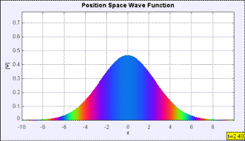

Screen shot of free particle wave packet.
The free particle wave packet program displays the time evolution of a free (V = 0 everywhere) initial Gaussian wave packet in position and momentum space. The default wave functions have expectation value of x = 0 and expectation value of p = 0, respectively. The Schrödinger equation determines the time evolution of this wave packet. Although the square of the area of the wave packet (total probability) remains constant, the wave packet spreads in position space as shown in this model of the analytic solution. Why doesn't the wave packet change in momentum space?
David Griffiths Introduction to Quantum Mechanics 2ed Section 2.4.
The free particle wave packet simulation was created by Wolfgang Christian using the Easy Java Simulations (EJS) modeling tool. You can examine and modify the mathematical model for this simulation if you have Ejs installed by right-clicking within the plot and selecting "Open Ejs Model" from the pop-up menu. Information about Ejs is available at: <http://www.um.es/fem/Ejs/> and in the OSP ComPADRE collection <http://www.compadre.org/OSP/>.